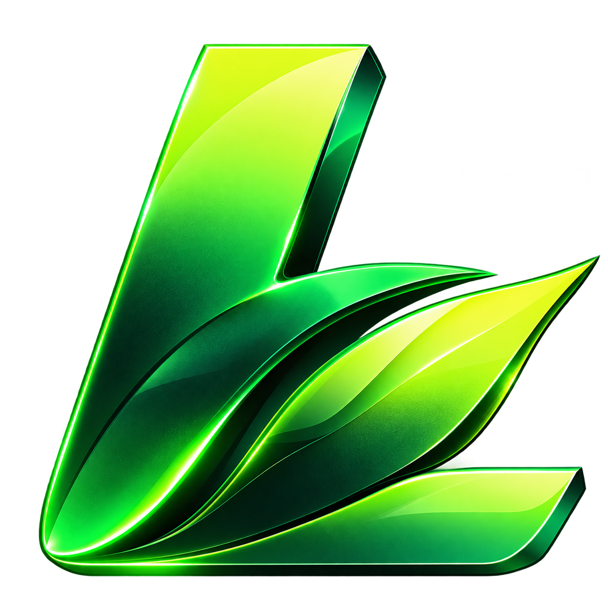

Semeadura
com drone
na silvicultura
Restauração e reflorestamento em escala, inclusive onde a máquina e a equipe a pé não chegam.

Restauração e reflorestamento em escala, inclusive onde a máquina e a equipe a pé não chegam.
Encostas, APPs, margens de rio e áreas alagadas travam máquinas e expõem a equipe a riscos.
Plantio manual exige equipes grandes, logística de campo e janelas curtas de chuva.
Produção de mudas, transporte e plantio pesam no orçamento de restauração e compensação.
Levantamento do talhão, delimitação dos polígonos e definição das faixas de voo.
Seleção de espécies, quebra de dormência e, quando indicado, peletização ou mistura em muvuca.
O drone distribui as sementes na taxa planejada, com rota gravada e área registrada.
Avaliação de germinação e estabelecimento para decidir ressemeadura ou manejo.
Rendimento muito superior ao plantio manual, com equipe reduzida.
Encostas, alagados e áreas pós-incêndio sem expor pessoas.
Sem tráfego de máquinas: menos compactação e perturbação do terreno.
Cada voo gera registro de área, taxa e rota para auditorias e certificações.
Recomposição exigida pelo Código Florestal e por PRADs.
Retomada rápida da cobertura vegetal para conter erosão.
Adensamento de fragmentos e cobertura verde em entrelinhas de plantios.
Projetos de restauração com registro georreferenciado de cada operação.
Defina o projeto com um engenheiro florestal ou agrônomo responsável.
Cadastro das áreas e de cada projeto florestal.
Cálculo de insumos e registro da taxa aplicada.
Planejamento das janelas de voo e de chuva.
Relatório da operação pronto para o cliente.
Conte sua área e seu objetivo. O Grupo Liberato monta o plano de semeadura com drone para o seu projeto.